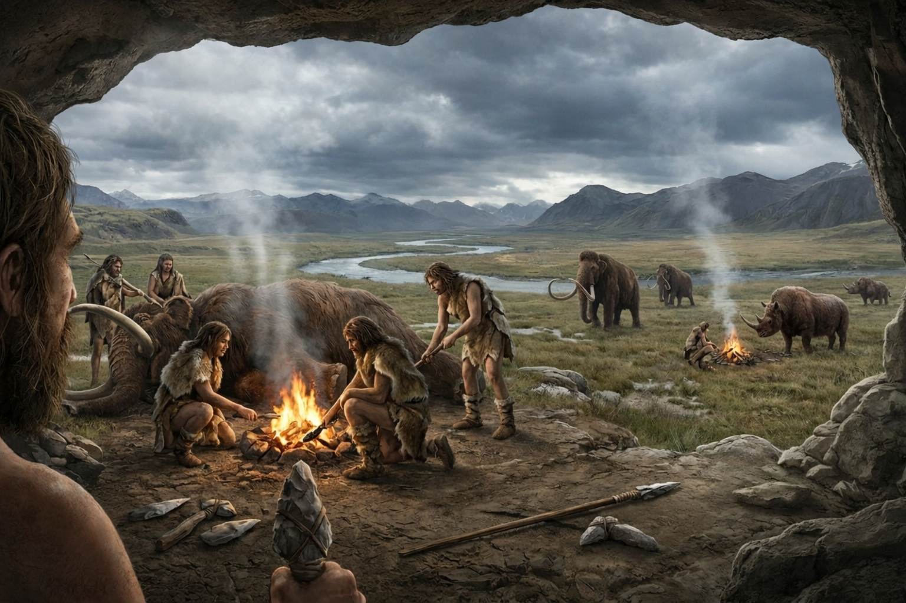
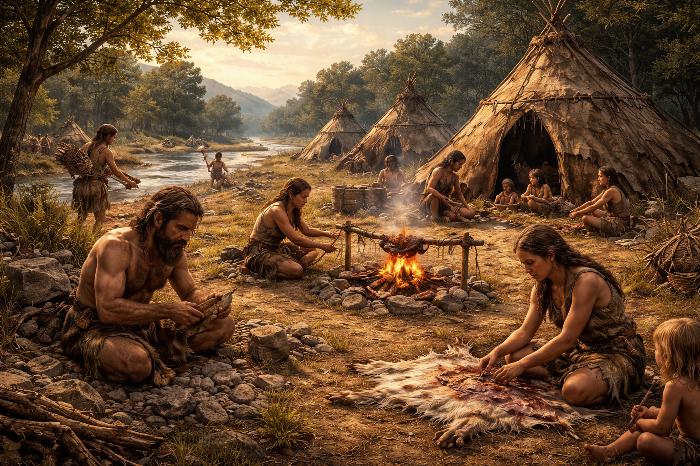

ca. 2,3 miljoen v.C. – 3300 v.C.
De prehistorie is de oudste en veruit langste periode in de geschiedenis van de mens. Het woord betekent letterlijk "voor de geschiedenis": er bestond nog geen schrift, dus mensen konden niets opschrijven. Alles wat we over deze tijd weten, hebben wetenschappers ontdekt via archeologische vondsten zoals stenen werktuigen, beenderen en rotstekeningen.

ca. 2,3 miljoen v.C.
De prehistorie begint wanneer de eerste mensachtigen stenen werktuigen gaan maken. De Homo habilis ("de handige mens") leefde in Afrika en gebruikte als eerste bewerkte stenen om vlees te snijden. Later volgden andere menssoorten, zoals de Homo erectus en uiteindelijk de Homo sapiens – de moderne mens – die ontstond rond 170.000 jaar geleden in Afrika.

Lange tijd leefden mensen als jagers en verzamelaars. Ze trokken in kleine groepen rond (nomadisch) op zoek naar voedsel en hadden geen vaste woonplaats. Ze maakten werktuigen van steen en leerden vuur te gebruiken. Rond 10.000 v.C. veranderde dit ingrijpend door de Neolithische Revolutie: mensen leerden planten verbouwen en dieren temmen. Daardoor konden ze zich op een vaste plek vestigen (sedentair), dorpen bouwen en voedsel opslaan.
| Tijdperk | Periode | Kenmerken |
|---|---|---|
| Oude Steentijd | ca. 2,5 mln – 10.500 v.C. | Jagers en verzamelaars, nomadisch, vuur, stenen werktuigen |
| Middensteentijd | ca. 10.500 – 5.300 v.C. | Overgang naar landbouw, einde van de laatste ijstijd |
| Nieuwe Steentijd | ca. 5.300 – 3.200 v.C. | Landbouw, veeteelt, vaste nederzettingen, keramiek |
ca. 3300 v.C.
De prehistorie eindigt rond 3300 v.C. met de uitvinding van het schrift in Soemerië (het huidige Irak). Dit eerste schrift — het spijkerschrift — bestond uit ingedrukte symbolen in klei en werd gebruikt om handel en bestuur bij te houden. Vanaf dit moment begint de "echte" geschiedenis: de periode waarover we geschreven bronnen hebben.